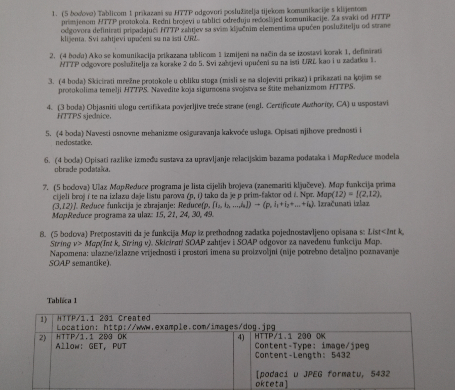

DostDobroIme Jep, nije se snimalo.
Je li prag za kontinuiranu nastavu 20/40 iz labosa i 30/60 iz oba ispita, ili svaki ispit jos ima zasebno 50% prag a da mi je to negdje promaklo?
peaceko ukupno 50% iz ispita
Postoje li igdje neki zadaci koji dolaze u završnom, ili teorija, anything ? Ne mogu naći u materijalima baš :/
toblerone Imas u pdf-u od mi 2019-20 samo scrollaj malo dolje
sta sve ulazi u zavrsni?
Klokan sve (cijelo gradivo semestra)
Jel zna netko koji su binarni, a koji tekstualni protokoli za RPC?
bearyn
binarni-CORBA, DCOM, Java RMI,Protobufs,Thrift
tekstualni- XML,SOAP,JSON
 Je li rjesavao mozda netko ovaj ispit?
I ima li itko možda ideju za kakav bi mogao doći zadatak u ispitu za koji nam treba kalkulator?
Ego Vjerojatno nešto kao u pdf-u mi 2019/2020, prvi zadatak pod “Ostalo”.
Danas a grupa zadnji zadatak, jesu zadnja 2 stupca doslovno bili samo prepisati vrijeme slanja ili ja nekaj nisam skužil dobro
DuckItUp Ja sam isto tako i bilo mi je ful sumnjivo
DuckItUp ja sam isto tako i zivim s nadom da je dobro inace me rok ceka…
temari takoder isto pitanje i za tebe kao i za bearyna
Jel netko zapamtio/prepisao pitanja?
znam da je godinu dana kasnije, ali jel ovo na kraju bilo dobro? P.S. to je ovaj 12. na kraju pdfa https://github.com/studosi-fer/RZNU/blob/master/ispiti/zi/2020-21/RZNU_2020-21_zi.pdf